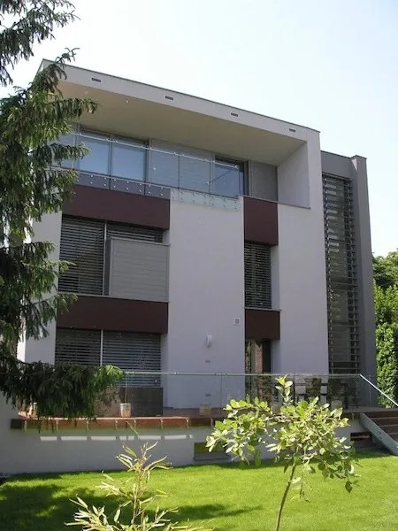

Stavebný dozor · 2009
RD Kalvária, Bratislava
- Miesto
- Bratislava
- BM Building
- Stavebný dozor
- Projektant
- CONCEPT Slovakia s.r.o.
- Termín
- 2009
- Investor
- súkromný investor
- Zhotoviteľ
- Colorstav - Team, s.r.o.
Rekonštrukcia a prestavba rodinného domu na mestskú vilu.

Kontakt
+421 903 794 738info@bmbuilding.sk BM Building, s.r.o., Ing. Mário Bulko, konateľ
Podhorská 9, 902 01 Pezinok
Otvoriť v Mapách GoogleOtvoriť na Mapy.cz